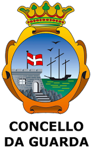

La guardia es un pueblo que está situado en Galicia en la provincia de Pontevedra.La Guardia tiene 10.133 habitantes (4.937 hombres y 5.195 mujeres).

Lugares para visitar
El Monte Santa Tecla
El Puerto
Geografía
Comunica con Portugal por la frontera natural del río Miño por el sureste, con el océano Atlántico por el oeste y con el ayuntamiento de El Rosal por el norte. Es accesible por la carretera PO-552 desde Tuy y desde Bayona, y desde Caminha por transbordador. Se encuentra a 50 km de Vigo y a 120 de Santiago de Compostela.
La altitud a nivel del mar no impiden al Monte de Santa Tecla y al Monte Terroso elevarse sobre 314 m y 350 m respectivamente, permitiendo excelentes vistas, especialmente desde el Monte de Santa Tecla donde se puede disfrutar de la desembocadura del río Miño, el océano Atlántico y los montes de Portugal y Galicia.